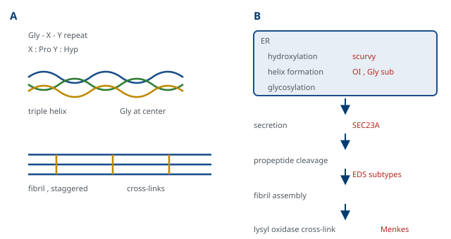

M01-W11-L01 · 인체일반생물학과 기초세포생물학
세포외기질과 세포 간 결합
The Extracellular Matrix and Cell Junctions
학습목표
- 세포외기질의 네 성분군을 들고 각 성분이 담당하는 기계적 성질을 설명한다.
- Collagen의 합성과 조립 과정을 단계로 서술하고 각 단계의 결손이 만드는 질환을 연결한다.
- Elastin과 fibrillin의 관계를 설명하고 탄성 섬유의 결손이 만드는 질환의 양상을 쓴다.
- Proteoglycan의 구조와 수화 성질을 설명하고 관절과 각막에서의 기능을 연결한다.
- 기저막의 구성 성분을 들고 신장 여과와 상피 부착에서의 역할을 설명한다.
- Integrin의 구조와 활성화 방식을 쓰고 안쪽과 바깥쪽 양방향 신호 전달을 설명한다.
- 네 가지 세포 간 결합을 기능과 구성 단백질로 구분하고 각각의 결손이 만드는 질환을 든다.
- Tight junction이 만드는 두 가지 장벽을 구분하고 상피의 극성이 유지되는 기전을 설명한다.
- 기질의 분해와 재구성을 담당하는 효소와 그 조절을 설명하고 병적 상황에서의 역할을 쓴다.
- 상피-중간엽 전환의 분자적 내용을 쓰고 발생과 종양에서의 쓰임을 구분한다.
선수지식
- M01-W10-L03 원형질막과 막수송 — 막단백질의 배치, 상피세포의 두 면과 극성
- M01-W10-L02 세포골격과 세포 운동 — 세포 이동의 접착 단계, 중간섬유, actin과 막의 연결
- M01-W09-L01 단백질 표적화와 소포 수송 — 분비 경로와 거대 화물의 수송, 당 사슬의 부가
- M01-W08-L01 번역 후 가공, 단백질 접힘과 분해 — proteolytic processing, 접힘과 수식
강의 구성
- 1. 세포 밖에도 구조가 있다
- 2. Collagen — 합성 경로가 곧 질환의 지도
- 3. 탄성 섬유와 압축을 버티는 겔
- 4. 기저막과 접착 당단백질
- 5. Integrin — 기질을 읽는 수용체
- 6. 세포 간 결합 — 네 가지 장치
- 7. Tight junction과 상피의 극성
- 8. 기질의 재구성 — 만들고 부수는 균형
- 9. 상피-중간엽 전환
- 10. 연결
1. 세포 밖에도 구조가 있다
세포생물학은 세포 안을 다루지만, 다세포 생물에서 세포는 혼자 있지 않다. 세포 사이의 공간은 비어 있지 않고 단백질과 당으로 채워져 있으며, 그 구조물을 세포외기질(extracellular matrix)이라 한다. 조직마다 비율이 크게 다르다. 뼈와 힘줄, 연골은 부피의 대부분이 기질이고 세포는 그 안에 흩어져 있으며, 상피에서는 세포가 대부분이고 기질은 얇은 판으로만 존재한다.
기질이 하는 일은 세 가지다.
- 기계적 지지: 장력과 압축을 견디고 조직의 모양을 유지한다.
- 정보 제공: 세포가 기질에 붙어 그 성분과 단단함을 읽고, 그에 따라 분화·생존·이동을 결정한다.
- 저장과 분배: 성장인자를 붙잡아 두고 필요할 때 내놓는 저장소로 작동한다.
두 번째가 특히 중요하다. 오랫동안 기질은 세포를 지탱하는 수동적 구조물로 여겨졌으나, 지금은 세포가 받는 신호의 큰 부분이 기질에서 온다는 것이 확립되었다. 배양 접시에서 세포가 붙을 바탕이 없으면 많은 세포가 세포사멸에 들어가는데, 이 현상을 anoikis라 한다. 즉 "붙어 있다"는 사실 자체가 생존 신호이고, 그 신호를 읽는 장치가 이 수업의 후반에서 다룰 integrin이다.
기질의 성분은 네 군으로 나눈다.
| 성분군 | 대표 분자 | 담당하는 성질 |
|---|---|---|
| 섬유성 구조 단백질 | collagen | 장력에 대한 저항(인장 강도) |
| 탄성 단백질 | elastin, fibrillin | 늘어난 뒤 되돌아오는 성질 |
| 수화 다당류 | glycosaminoglycan, proteoglycan | 압축에 대한 저항, 확산의 조절 |
| 접착 당단백질 | fibronectin, laminin | 세포와 기질을 잇는 연결 |
네 군의 역할 분담이 재료의 성질에서 바로 나온다. 장력은 인장 강도가 큰 섬유가, 압축은 물을 붙잡은 겔이 받는다. 그래서 힘줄처럼 당겨지는 조직은 collagen 섬유가 평행하게 배열되고, 연골처럼 눌리는 조직은 proteoglycan이 많아 물을 머금은 상태로 압력을 버틴다. 뼈는 collagen 섬유에 무기질이 침착해 두 성질을 함께 가진다.
기질의 성분은 세포가 만들어 분비한 것이므로, 그 합성과 분해가 모두 세포의 통제 아래 있다. 이것이 기질을 "세포 밖에 있지만 세포가 만든 구조"로 보아야 하는 이유다. 뒤에서 보듯 같은 세포가 기질을 만들고, 기질에 붙어 신호를 받고, 필요할 때 기질을 분해한다. 만드는 쪽과 읽는 쪽과 부수는 쪽이 같은 세포라는 점이 기질이 조직의 상태에 맞추어 끊임없이 조정되는 근거다.
2. Collagen — 합성 경로가 곧 질환의 지도
Collagen은 사람 몸에서 가장 풍부한 단백질로 전체 단백질 질량의 약 4분의 1을 차지한다. 28종 이상이 알려져 있고, 구조에 따라 섬유를 만드는 것(I, II, III, V, XI형), 그물을 만드는 것(IV, VIII형), 그리고 섬유에 붙는 것으로 나뉜다.
기본 단위는 삼중나선이다. 세 가닥의 polypeptide(α 사슬)가 서로 꼬여 있고, 각 사슬은 Gly-X-Y가 반복되는 서열을 가진다. X에는 proline이, Y에는 hydroxyproline이 자주 온다. 이 서열에 두 가지 제약이 걸려 있다.
- Glycine이 세 번째마다 와야 한다. 삼중나선의 중심에는 side chain이 들어갈 공간이 없어, 가장 작은 아미노산인 glycine만 그 자리에 올 수 있다. 그래서 glycine을 다른 아미노산으로 바꾸는 변이는 나선 전체를 어긋나게 한다.
- Hydroxyproline이 나선을 안정화한다. Proline의 hydroxylation은 vitamin C를 보조인자로 쓰는 효소가 수행하고, hydroxyl기가 사슬 사이의 수소결합을 만들어 나선을 단단하게 한다.
합성 과정을 단계로 보면, 각 단계의 결손이 서로 다른 질환이 된다는 것이 드러난다.
| 단계 | 장소 | 결손의 예 |
|---|---|---|
| 1. preprocollagen 합성, 신호서열 제거 | 소포체 | — |
| 2. proline과 lysine의 hydroxylation | 소포체 | vitamin C 결핍(scurvy), 일부 Ehlers–Danlos |
| 3. 당 사슬 부가 | 소포체 | — |
| 4. 삼중나선 형성(procollagen) | 소포체 | 골형성 부전증(*COL1A1/2*의 glycine 치환) |
| 5. 소포로 분비 | Golgi → 세포 밖 | SEC23A 결손 등 거대 화물의 수송 결함 |
| 6. 양 끝의 propeptide 절단 | 세포 밖 | 일부 Ehlers–Danlos(절단 효소 결손) |
| 7. 섬유로 자발 조립 | 세포 밖 | — |
| 8. lysyl oxidase에 의한 교차연결 | 세포 밖 | Menkes 병(구리 결핍으로 효소 작동 불가), lathyrism |
섬유의 조립에도 규칙이 있다. 삼중나선 분자들이 서로 엇갈려(staggered) 배열되어 섬유를 이루므로, 전자 현미경에서 약 67 nm 주기의 띠가 보인다. 섬유의 지름과 배열 방향은 함께 분비되는 다른 collagen(V형, XI형)과 proteoglycan이 조절하며, 그래서 힘줄에서는 굵은 섬유가 평행하게, 피부에서는 가는 섬유가 그물로 배열된다. 같은 I형 collagen이 조직에 따라 다른 구조를 이루는 것은 분자 자체가 아니라 함께 있는 성분이 정한다는 뜻이다.

3. 탄성 섬유와 압축을 버티는 겔
Elastin은 collagen과 반대의 성질을 담당한다. 서열에 glycine, proline, valine, alanine이 많고 규칙적인 2차 구조가 없어 사슬이 무정형으로 뭉쳐 있다. 이 사슬들이 lysine 잔기를 통해 서로 교차연결되어 그물을 이루면, 당기면 사슬이 펴지고 놓으면 엔트로피가 커지는 방향으로 되돌아간다. 고무가 늘어나고 되돌아오는 것과 같은 원리이며, 에너지를 쓰지 않는다. 대동맥, 폐, 피부, 탄성 인대에 많다.
Elastin은 혼자 섬유를 만들지 못한다. Fibrillin이 만든 미세섬유 뼈대 위에 elastin이 침착해 탄성 섬유가 완성된다. 이 분업이 임상적으로 중요하다. FBN1(fibrillin-1) 변이로 생기는 Marfan 증후군에서는 elastin 자체는 정상인데 뼈대가 약해 탄성 섬유의 조립이 어긋난다. 대동맥 뿌리가 늘어나 박리의 위험이 커지고, 수정체가 위로 밀려나며(위쪽 수정체 이탈), 긴 팔다리와 거미손가락, 척추 측만이 나타난다.
Marfan 증후군에는 기질이 성장인자의 저장소라는 §1의 서술이 직접 적용된다. Fibrillin은 TGF-β를 비활성 상태로 붙잡아 두는 역할도 하므로, fibrillin이 결손되면 붙잡혀 있던 TGF-β가 풀려나 신호가 과도해진다. 이 모형에서 나온 치료 가설이 TGF-β 신호를 줄이는 것이었고, angiotensin II 수용체 차단제가 동물 모형에서 대동맥 확장을 줄였다. 사람 임상 시험의 결과는 β 차단제와 비교해 명확한 우위를 보이지 않아 논의가 이어지고 있으나, 구조 단백질의 결손이 신호의 이상으로 번역된다는 개념이 확립된 사례다.
압축을 버티는 쪽은 당이 담당한다. Glycosaminoglycan(GAG)은 이당 단위가 반복되는 긴 다당류이며, 거의 모든 단위에 carboxyl기나 sulfate기가 있어 강한 음전하를 띤다. 종류는 hyaluronan, chondroitin sulfate, dermatan sulfate, keratan sulfate, heparan sulfate다. 음전하가 양이온을 끌어당기고 그 양이온이 물을 끌어오므로, GAG는 자기 부피의 수십 배의 물을 머금는다. 그 결과가 두 가지다. 압축을 받으면 물이 밀려 나가며 저항하고, 압력이 풀리면 다시 물을 머금어 되돌아온다. 연골이 하중을 반복해 받으면서도 버티는 기전이며, 관절 윤활액의 점성도 hyaluronan에서 온다.
GAG 사슬이 단백질 중심에 여러 개 붙은 것이 proteoglycan이다. 연골의 aggrecan은 하나의 중심 단백질에 100개 이상의 사슬이 붙어 있고, 여러 분자가 hyaluronan에 묶여 거대한 복합체를 이룬다. Proteoglycan은 기계적 역할 외에 확산의 조절도 한다. 음전하 그물이 성장인자와 사이토카인을 붙잡아 두므로, 기질이 신호 분자의 농도 분포를 만든다. 특히 heparan sulfate proteoglycan은 여러 성장인자의 보조 수용체로 작동해 신호의 세기 자체를 바꾼다.
Hyaluronan은 다른 GAG와 두 가지 점에서 다르다. 첫째, 단백질 중심에 붙지 않고 혼자 존재한다. 그래서 proteoglycan이 아니다. 둘째, sulfate기가 없고 세포막의 효소가 세포 표면에서 직접 길게 합성한다. 분자량이 수백만에 이를 수 있고 물을 가장 많이 머금어, 관절 윤활액과 유리체의 점성, 그리고 발생 중인 조직에서 세포가 이동할 공간을 만드는 데 쓰인다. 임상에서는 관절 내 주사와 피부 충전제로 쓰이며, 종양에서 hyaluronan이 많으면 조직의 압력이 높아져 약물의 침투가 어려워진다는 보고가 있다. 분해는 hyaluronidase가 담당하고, 일부 세균이 이 효소를 분비해 조직을 통과하는 수단으로 쓴다.
4. 기저막과 접착 당단백질
기저막(basement membrane, basal lamina)은 상피세포의 기저면, 근섬유와 지방세포의 표면, 그리고 모세혈관을 감싸는 얇은 판이다. 두께가 50~100 nm에 불과하지만 네 가지 일을 한다. 상피를 아래의 결합조직에 붙이고, 분자의 통과를 선택적으로 조절하고, 세포의 극성을 정하는 신호를 주고, 손상 후 재생의 틀을 제공한다.
구성은 네 성분이 정해져 있다.
- IV형 collagen: 섬유가 아니라 그물을 만든다. 기저막의 기본 뼈대다.
- Laminin: 십자 모양의 당단백질로, 한쪽 팔은 세포의 integrin에, 다른 팔은 다른 laminin과 결합해 그물을 만든다. 발생에서 기저막이 처음 형성될 때 laminin 그물이 먼저 만들어진다.
- Nidogen(entactin): IV형 collagen 그물과 laminin 그물을 잇는 가교다.
- Perlecan: heparan sulfate proteoglycan으로, 음전하를 제공해 여과의 선택성에 기여한다.
기저막의 선택적 투과가 가장 분명하게 작동하는 곳이 신장의 여과 장벽이다. 혈액에서 소변으로 가려면 모세혈관 내피의 구멍, 기저막, 그리고 podocyte 사이의 틈을 지나야 한다. 기저막의 음전하가 음전하를 띤 albumin을 밀어내므로, 크기와 전하가 함께 선택을 만든다. 이 장벽의 구성 요소에 이상이 생기면 단백뇨가 된다. COL4A3/4/5 변이는 Alport 증후군을 일으켜 진행성 신질환과 감각신경성 난청, 눈의 이상을 함께 만들고, podocyte의 틈막 단백질(nephrin, podocin) 변이는 선천성 신증후군을 만든다. "어느 층이 망가졌는가"가 소변 소견과 전자 현미경 양상을 정한다.
접착 당단백질 두 가지를 구별해 둔다.
- Fibronectin: 결합조직의 기질과 혈액에 있다. 여러 도메인을 가진 모듈 구조이며, collagen, heparin, 그리고 세포의 integrin에 각각 결합하는 부위가 따로 있다. Integrin이 인식하는 짧은 서열이 RGD(Arg-Gly-Asp)이고, 이 세 잔기가 접착의 최소 단위로 확인되었다. 상처 치유와 세포 이동의 길잡이로 작동한다.
- Laminin: 기저막에 있다. 상피세포와 기저막의 결합을 담당한다.
즉 fibronectin은 결합조직 안의 세포를, laminin은 상피세포를 기질에 붙인다. 두 분자의 분포가 조직의 구조를 반영한다.
기저막의 조성은 조직마다 조금씩 다르고, 그 차이가 기능에 대응한다. 신장 사구체의 기저막은 특히 두껍고 α3·α4·α5 사슬로 된 IV형 collagen을 쓰며 음전하가 강해 여과에 맞추어져 있다. 피부의 기저막은 hemidesmosome과 고정 섬유로 표피를 단단히 붙잡는 데 맞추어져 있고, 근섬유의 기저막은 laminin-211을 주로 쓴다. 그래서 같은 기저막 성분의 변이가 조직에 따라 전혀 다른 질환을 만든다. LAMA2(laminin α2) 변이는 선천성 근육병을, laminin 332의 변이는 접합부형 수포성 표피박리증을 일으킨다. "기저막"이 하나의 구조물 이름이지만 조성은 조직마다 다르다는 점을 알아야 이 분포가 설명된다.
5. Integrin — 기질을 읽는 수용체
세포가 기질에 붙는 일을 담당하는 주된 수용체가 integrin이다. 이름은 세포 밖의 기질과 세포 안의 세포골격을 하나로 통합(integrate)한다는 뜻에서 왔고, 그 이름이 기능을 정확히 요약한다.
구조는 α 사슬과 β 사슬의 이종이량체다. 사람에게 α 18종과 β 8종이 있어 24종의 조합이 알려져 있고, 조합이 어느 기질 분자를 인식할지를 정한다. 두 사슬 모두 막을 한 번 통과하고, 세포질 쪽 꼬리는 짧다. 짧은 꼬리에 효소 활성이 없다는 점이 중요하다. Integrin은 스스로 신호를 만들지 못하고, 꼬리에 모이는 단백질들(talin, kindlin, paxillin, focal adhesion kinase, vinculin)이 신호와 연결을 담당한다.
Integrin의 작동에는 두 가지 특징이 있다.
첫째, 활성화되는 수용체다. Integrin은 평소에 구부러진 저친화도 구조로 있다가, 신호를 받으면 펴진 고친화도 구조로 바뀐다. 활성화는 두 방향에서 올 수 있다. 세포 안에서 talin과 kindlin이 β 꼬리에 결합하면 구조가 펴지고(inside-out 신호), 세포 밖에서 기질에 결합하면 그 변화가 세포 안으로 전달되어 꼬리에 단백질이 모인다(outside-in 신호). 즉 integrin은 양방향으로 정보를 전달한다. 이 성질이 세포 이동에서 접착과 분리를 조절하는 근거이고, 혈소판이 자극을 받은 뒤에야 fibrinogen에 붙는 이유다.
둘째, 힘을 전달하고 힘을 감지한다. Integrin은 세포 안에서 actin에 연결되어 있으므로, 세포가 만든 장력이 기질로 전달되고 기질의 단단함이 세포로 전달된다. Talin은 당겨지면 구조가 펴지며 vinculin이 붙을 자리를 드러내는데, 이것이 힘을 분자적 사건으로 바꾸는 장치다. M01-W10-L02에서 다룬 기계적 신호 전달의 중심이 여기에 있다.
접착 구조의 형태는 세포골격의 어느 계통과 이어지는지로 나뉜다.
| 구조 | 기질 쪽 결합 | 세포 안의 연결 | 특징 |
|---|---|---|---|
| Focal adhesion | integrin — fibronectin 등 | actin | 동적이다. 이동 중에 만들어지고 사라진다 |
| Hemidesmosome | integrin(α6β4) — laminin | 중간섬유(keratin) | 안정하다. 상피를 기저막에 고정한다 |
같은 integrin 계열이 한쪽에서는 actin에, 다른 쪽에서는 중간섬유에 연결된다는 점이 설계의 핵심이다. 움직여야 하는 접착은 actin에, 버텨야 하는 접착은 중간섬유에 잇는다.
Integrin이 유일한 접착 수용체는 아니다. 기질과 결합하는 다른 부류로 dystroglycan과 syndecan이 있다. Dystroglycan은 근육에서 laminin과 결합하며 세포 안쪽에서 dystrophin을 거쳐 actin에 이어지므로, M01-W10-L02에서 본 dystrophin 연결의 세포 밖 쪽 짝이 된다. 이 분자에 당 사슬을 붙이는 효소들의 결손이 선천성 근육병의 한 부류를 만들며, 당화의 결손이 접착의 결손으로 번역되는 예다. Syndecan은 heparan sulfate를 달고 있어 기질에 붙는 동시에 성장인자를 붙잡아 수용체에 건네는 보조 수용체로도 작동한다. 즉 접착과 신호가 분자 수준에서 분리되지 않는다는 점이 이 두 부류에서도 확인된다.
6. 세포 간 결합 — 네 가지 장치
상피세포는 기질에만 붙지 않고 서로에게도 붙는다. 결합 장치는 기능으로 네 가지로 나뉘며, 구성 단백질과 세포골격 연결이 각각 다르다.
| 결합 | 기능 | 세포 밖 단백질 | 세포 안 연결 |
|---|---|---|---|
| Tight junction(밀착 연결) | 분자의 통과를 막는 장벽, 두 면의 분리 | claudin, occludin | actin |
| Adherens junction(접착 연결) | 세포끼리 기계적으로 붙인다 | E-cadherin | actin(α·β-catenin 경유) |
| Desmosome(부착반점) | 강한 기계적 결합 | desmoglein, desmocollin | 중간섬유 |
| Gap junction(간극 연결) | 세포질을 직접 잇는 통로 | connexin | 없다 |
상피세포의 측면을 따라 이 장치들이 정해진 순서로 배열된다. 위(내강 쪽)에서부터 tight junction, adherens junction, desmosome의 순서이고, gap junction은 그 아래에 흩어져 있다. 앞의 셋을 묶어 junctional complex라 한다.
Cadherin이 접착의 특이성을 만든다. Cadherin은 Ca²⁺ 의존적으로 작동하며, 같은 종류의 cadherin끼리 결합하는 동종 결합 성질을 가진다. 그래서 같은 cadherin을 발현하는 세포끼리 모이고 다른 세포는 배제되므로, 발생 과정에서 세포 집단이 스스로 분리되어 조직 경계를 만든다. 서로 다른 cadherin을 발현하는 세포를 섞으면 저절로 두 덩어리로 분리되는 고전적 실험이 이 성질을 보였다. 상피는 E-cadherin, 신경과 근육은 N-cadherin, 혈관 내피는 VE-cadherin을 주로 쓴다.
E-cadherin의 세포질 꼬리에는 β-catenin이 결합한다. 이 분자가 두 가지 일을 하므로 뒤의 수업과 연결된다. 접착 구조에서는 cadherin을 actin에 잇는 연결 단백질이고, 접착에 쓰이지 않고 세포질에 자유로이 있으면 핵으로 들어가 전사를 켜는 Wnt 경로의 신호 분자다. 즉 하나의 분자가 접착과 신호 양쪽에 있다는 점이 상피의 상태와 유전자 발현이 연결되는 통로가 된다. 상세는 M01-W11-L03에서 다룬다.
7. Tight junction과 상피의 극성
Tight junction은 두 가지 서로 다른 장벽을 만든다. 이 구별이 상피 생리의 기초다.
- 문 기능(gate function): 세포와 세포 사이의 틈을 막아 물질이 상피를 가로질러 새는 것을 제한한다. 즉 세포 사이 경로(paracellular pathway)를 조절한다.
- 울타리 기능(fence function): 막단백질과 지질이 내강 쪽 면과 기저 쪽 면 사이를 옮겨 다니지 못하게 막아, 두 면의 조성 차이를 유지한다.
두 번째가 M01-W10-L03에서 미뤄 둔 질문의 답이다. 소장 상피세포가 내강 쪽에 SGLT1을, 기저막 쪽에 GLUT2와 Na⁺/K⁺-ATPase를 따로 두어 방향성 있는 흡수를 만들 수 있는 것은, tight junction이 그 두 집단을 섞이지 않게 막아 주기 때문이다. 극성 없이는 방향성 있는 수송이 없고, tight junction 없이는 극성이 유지되지 않는다.
문 기능의 세기는 조직마다 다르고, 그것이 생리에 맞추어져 있다. 결정하는 것은 claudin의 종류와 조합이다. 일부 claudin은 틈을 막고, 일부는 특정 이온만 통과시키는 선택적 통로를 만든다. 그래서 상피를 빽빽한(tight) 상피와 느슨한(leaky) 상피로 나눈다. 신장 근위세관과 소장은 느슨해 많은 양의 물과 이온이 세포 사이로 지나가고, 집합관과 방광은 빽빽해 소변의 농도를 유지한다. 전기적으로는 상피를 가로지른 저항(transepithelial resistance)으로 측정한다.
Tight junction은 고정된 구조가 아니다. 염증 매개체와 사이토카인이 claudin의 조성과 배치를 바꾸어 장벽을 느슨하게 만들고, 이것이 염증성 장질환에서 장 투과성이 올라가는 기전으로 지목된다. 병원체도 이 장벽을 겨냥한다. Clostridioides difficile 독소는 actin 세포골격을 교란해 tight junction을 풀고, 일부 세균 독소는 claudin에 직접 결합한다. 장벽의 조절 가능성이 생리적 유연성을 주는 동시에 공격의 표적이 된다.
8. 기질의 재구성 — 만들고 부수는 균형
기질은 한 번 만들어져 고정되는 것이 아니다. 끊임없이 분해되고 다시 만들어지며, 그 균형이 조직의 구조를 유지한다. 분해를 담당하는 주된 효소군이 matrix metalloproteinase(MMP)다. 활성 부위에 Zn²⁺을 가지며, collagen, laminin, proteoglycan 등 거의 모든 기질 성분에 대응하는 종류가 있다.
MMP는 세 층으로 조절된다. 이 다중 조절이 필요한 이유는 분명하다. 조절되지 않은 기질 분해는 조직의 파괴를 뜻하기 때문이다.
1. 전사 수준: 평소에는 거의 발현되지 않고, 염증 매개체와 성장인자가 발현을 유도한다. 2. 활성화 수준: 비활성 전구체(zymogen)로 분비되어 세포 밖에서 절단되어야 활성을 얻는다. 3. 억제 수준: TIMP(tissue inhibitor of metalloproteinase)가 활성 효소에 결합해 억제한다.
MMP와 TIMP의 균형이 깨지는 것이 여러 질환의 공통 기전으로 제시된다. 분해가 과도한 쪽에서는 폐의 탄성 섬유가 파괴되는 폐기종, 관절 연골이 소실되는 골관절염, 동맥 벽이 약해지는 동맥류, 그리고 종양의 침습이 있다. 반대로 합성이 과도하거나 분해가 모자라면 섬유화가 된다. 간경변, 폐 섬유화, 켈로이드가 그 예다.
폐기종이 두 경로로 생긴다는 점이 이 균형을 잘 보여 준다. 흡연은 호중구와 대식세포를 불러 단백분해효소를 늘리고, 동시에 산화 스트레스로 억제 단백질을 불활성화한다. 한편 M01-W08-L01에서 다룬 α1-antitrypsin 결핍증에서는 억제 쪽이 애초에 부족하다. 두 경로가 만나는 지점은 하나다. 단백분해효소와 억제제의 비다. 그래서 α1-antitrypsin 결핍 환자에게 금연이 가장 중요한 중재가 된다.
기질 분해는 병적 과정만이 아니다. 상처 치유에서 세포가 이동하려면 길을 내야 하고, 발생에서 조직이 모양을 바꾸려면 기질이 재배치되어야 하며, 배란과 자궁의 주기적 변화에도 기질 분해가 필수적이다. 같은 효소가 재생과 파괴 양쪽에 쓰인다는 점이 MMP를 표적으로 하는 치료가 어려운 이유다. 실제로 MMP를 광범위하게 억제하는 약물의 임상 시험은 근골격계 부작용과 효과 부족으로 대부분 실패했고, 지금은 특정 MMP만 겨냥하거나 하류 과정을 표적으로 하는 방향이 모색된다.
기질을 만드는 세포도 정리해 둔다. 대부분의 결합조직에서는 섬유아세포가 collagen과 fibronectin, proteoglycan을 분비한다. 뼈에서는 osteoblast, 연골에서는 chondrocyte, 근육을 둘러싼 기질은 근섬유 자신과 주변 세포가 담당한다. 손상이 일어나면 섬유아세포가 활성화되어 myofibroblast로 바뀌는데, 이 세포는 actin-myosin 다발을 가져 수축하면서 상처를 좁히고 동시에 기질을 대량으로 분비한다. 상처 치유의 핵심 세포이지만, 치유가 끝난 뒤에도 사라지지 않고 남으면 기질이 계속 쌓여 섬유화가 된다. 정상적으로는 세포사멸로 제거되며, 이 제거가 실패하는 것이 폐 섬유화와 간경변, 켈로이드의 공통 지점으로 지목된다. TGF-β가 이 전환을 유도하는 주된 신호이고, 그래서 섬유화 치료의 표적 목록에서 이 경로가 반복해 등장한다.
9. 상피-중간엽 전환
상피세포와 중간엽세포는 성질이 반대다. 상피세포는 서로 붙어 판을 이루고 극성을 가지며 기저막 위에 머문다. 중간엽세포는 떨어져 있고 극성이 없으며 기질 안을 이동한다. 두 상태 사이의 전환이 발생과 질환에서 반복해 나타나며, 이를 상피-중간엽 전환(epithelial–mesenchymal transition, EMT)이라 한다.
분자적 내용은 네 가지 변화의 묶음이다.
1. E-cadherin의 발현이 꺼진다. 접착 연결이 해체되어 세포가 서로 떨어진다. 전사인자 SNAIL, SLUG, ZEB, TWIST가 *CDH1*의 전사를 억제한다. 2. N-cadherin으로 교체된다. 상피형 접착에서 중간엽형 접착으로 바뀐다. 3. 중간섬유가 keratin에서 vimentin으로 바뀐다. 세포의 기계적 성질이 변형에 유리한 쪽으로 바뀐다. 4. 이동과 분해 기구가 켜진다. Rho 계열 GTPase의 활성 배치가 바뀌고 MMP의 발현이 올라간다.
EMT가 쓰이는 맥락은 셋으로 구분된다. 발생에서는 신경관에서 떨어져 나온 신경능선 세포가 전신으로 이주하고, 심장 판막과 체축 구조가 만들어진다. 상처 치유와 섬유화에서는 상피세포가 중간엽 성질을 얻어 기질을 만드는 쪽으로 기울며, 지속되면 섬유화가 된다. 종양에서는 같은 과정이 침습과 전이의 첫 단계가 된다.
종양에서의 EMT는 신중하게 서술해야 한다. 전이가 일어나려면 세포가 원발 부위를 떠나야 하지만, 먼 곳에서 다시 자리를 잡고 자라려면 반대 방향의 전환(MET)이 필요하다는 것이 관찰되었다. 전이된 종양이 대개 원발 종양과 비슷한 상피 형태를 보이는 이유다. 또 EMT가 전부 일어나는 것이 아니라 중간 상태에 머무는 세포가 침습과 치료 저항에 더 중요하다는 자료가 쌓였다. 따라서 EMT는 켜고 꺼지는 스위치가 아니라 연속적인 상태의 이동으로 보는 것이 현재의 이해이고, 그 가역성이 치료 표적 설정을 어렵게 한다.
기질과 접착을 한 틀로 묶는 개념이 접착의 정도가 세포의 운명을 정한다는 것이다. §1에서 본 anoikis가 그 극단이다. 붙을 바탕이 없으면 세포가 죽는다. 이 장치의 의미는 분명하다. 다세포 생물에서 세포가 제자리를 벗어나 혼자 살아남으면 조직의 질서가 무너지므로, 위치 자체를 생존의 조건으로 만든 것이다. 종양세포가 전이하려면 이 조건을 넘어야 하고, 실제로 전이 능력을 가진 세포는 접착 없이도 생존 신호를 켜는 변화를 가지고 있다. 거꾸로 이 성질을 실험에 쓰기도 한다. 부유 상태에서 집락을 만드는 능력을 보는 검사가 종양세포의 성질을 가리는 고전적 방법이 된 이유가 여기에 있다.
10. 연결
이 수업은 세포 바깥과 세포 사이의 구조를 다루었다. 그 구조가 신호로 번역되는 과정과 조직 수준의 결과는 다음 수업들에 있다.
- M01-W10-L02 세포골격과 세포 운동 — 세포 이동의 네 단계와 Rho 계열의 배치, 중간섬유의 종류를 다룬다. 이 수업의 접착 구조가 거기서 이동의 발판으로 쓰인다.
- M01-W10-L03 원형질막과 막수송 — 상피의 두 면에 다른 수송체를 두어 방향성 있는 수송을 만드는 배치를 다룬다. 이 수업의 tight junction이 그 배치를 유지한다.
- M01-W09-L01 단백질 표적화와 소포 수송 — collagen처럼 거대한 화물이 소포체를 떠나는 과정, 그리고 COPII 결손 질환을 다룬다.
- M01-W11-L02 세포 신호전달 — integrin과 성장인자 수용체가 공유하는 하류 경로, 그리고 기질에 저장된 성장인자가 작동하는 방식을 다룬다.
- M01-W11-L03 신호 경로의 통합 — β-catenin이 접착과 Wnt 신호 양쪽에 놓이는 구조, TGF-β 경로, 그리고 EMT의 조절을 다룬다.
- M01-W12-L02 세포 재생과 사멸 — anoikis와 생존 신호, 상처 치유의 단계를 다룬다.
- M01-W12-L03 암의 세포생물학 — 침습과 전이의 단계, 종양 미세환경과 기질의 역할을 다룬다.
- M01-W04-L01 골학: 골격·관절·뼈의 재형성 — collagen과 무기질의 복합 구조, 뼈의 재형성 균형을 조직 수준에서 다룬다.
- M02-W03-L01 결합조직 질환 — 골형성 부전증, Marfan 증후군, Ehlers–Danlos 증후군의 진단과 관리를 임상의 틀에서 정리한다.
- M02-W05-L02 피부와 수포성 질환 — 수포의 깊이로 표적을 추론하는 논리를 피부 병리의 틀에서 다룬다.
확인 문항
Vitamin C 결핍에서 나타나는 임상 소견들을 collagen 합성 경로의 한 단계로 설명하고, 왜 특정 조직에서 먼저 증상이 생기는지 쓰라.
해설
Vitamin C는 proline과 lysine의 hydroxylation을 수행하는 효소의 보조인자다. Hydroxyproline은 삼중나선의 사슬 사이에 수소결합을 만들어 나선을 안정화하므로, 결핍되면 나선이 불안정한 collagen이 만들어진다. 불안정한 collagen은 세포 안에서 분해되거나 분비되어도 섬유로 제대로 조립되지 않아 조직의 인장 강도가 떨어진다. 증상이 먼저 나타나는 조직은 collagen의 교체가 빠른 곳이다. 잇몸에서 출혈과 치아 흔들림, 모세혈관 벽의 취약으로 점상출혈과 털주위 출혈, 상처 치유 지연, 그리고 이미 아물었던 상처가 다시 벌어지는 현상이 나타난다. 뼈에서는 골형성 부위의 기질이 약해져 성장판 이상과 통증이 생긴다. 요점은 두 가지다. 결손이 효소 자체가 아니라 보조인자에 있으므로 보충으로 빠르게 교정되고, 증상의 분포가 그 조직의 collagen 교체 속도를 반영한다는 것이다.
골형성 부전증에서 collagen 사슬이 아예 만들어지지 않는 변이보다 glycine이 다른 아미노산으로 치환되는 변이가 더 중증인 경우가 많다. 이 역설적 관계를 설명하라.
해설
삼중나선의 중심에는 side chain이 들어갈 공간이 없어 glycine만 그 자리에 올 수 있다. Glycine이 더 큰 아미노산으로 치환되면 그 지점에서 나선이 어긋나고, 변이 사슬이 정상 사슬과 함께 나선을 만들려 하면서 전체 삼중나선을 망가뜨린다. I형 collagen은 α1 두 가닥과 α2 한 가닥으로 이루어지므로, *COL1A1*의 한 대립형질에만 치환이 있어도 만들어지는 나선의 약 4분의 3이 변이 사슬을 하나 이상 포함하게 된다. 이것이 우성 음성 작용이고, 그래서 상염색체 우성으로 유전되며 중증이 된다. 반대로 사슬이 아예 만들어지지 않는 변이에서는 정상 대립형질의 산물만으로 나선이 조립되므로, 양은 절반이지만 질은 정상이다. 그 결과 더 경증의 표현형(I형 골형성 부전증)이 된다. 이 관계는 구조 단백질에서 일반적으로 나타나며, "변이가 있다"가 아니라 "변이 산물이 정상 산물의 조립에 끼어드는가"가 중증도를 정한다는 원리를 보여 준다.
Marfan 증후군은 elastin이 아니라 fibrillin의 변이로 생긴다. 이 사실이 탄성 섬유의 조립과 질환의 양상에 대해 무엇을 말하는지 설명하라.
해설
Elastin은 혼자 섬유를 만들지 못하고 fibrillin이 만든 미세섬유 뼈대 위에 침착해야 탄성 섬유가 완성된다. 따라서 elastin 자체가 정상이어도 뼈대가 약하면 섬유의 조립과 기계적 성질이 어긋난다. 양상은 탄성 섬유가 많고 반복적인 부하를 받는 조직에서 나타난다. 대동맥 뿌리가 늘어나 대동맥 박리의 위험이 커지고, 수정체를 붙잡는 띠가 약해 수정체가 위로 이탈하며, 긴 팔다리와 거미손가락, 척추 측만, 가슴뼈 변형이 생긴다. 여기에 더해 fibrillin은 TGF-β를 비활성 상태로 붙잡아 두는 역할도 하므로, 결손되면 TGF-β 신호가 과도해진다. 이 모형에서 구조 단백질의 결손이 신호의 이상으로 번역된다는 개념이 나왔고, TGF-β 신호를 줄이는 angiotensin II 수용체 차단제가 치료 후보로 시험되었다. 다만 사람 임상 시험에서 β 차단제에 대한 명확한 우위는 확인되지 않아 논의가 이어지고 있다. 감별에서는 수정체가 아래로 이탈하고 혈중 homocysteine이 높은 homocystinuria와 구별해야 한다.
연골이 반복적인 하중을 견디면서도 변형되지 않는 기전을 proteoglycan의 성질로 설명하라.
해설
연골 기질에는 aggrecan을 비롯한 proteoglycan이 많고, 그 중심 단백질에 glycosaminoglycan 사슬이 수십에서 수백 개 붙어 있다. GAG의 단위마다 carboxyl기와 sulfate기가 있어 강한 음전하를 띠므로 양이온을 끌어당기고, 그 양이온이 삼투압으로 물을 끌어온다. 그래서 기질은 자기 부피의 수십 배의 물을 머금은 겔이 된다. 하중이 걸리면 물이 밀려 나가면서 압력에 저항하고, 하중이 풀리면 다시 물을 머금어 원래 부피로 돌아온다. 이 가역적인 물의 이동이 압축을 버티는 기전이다. 동시에 collagen II형 섬유의 그물이 겔이 과도하게 부풀지 않도록 가두어 두므로, 두 성분이 함께 있어야 기능한다. 즉 장력은 collagen이, 압축은 수화된 proteoglycan이 담당하고, collagen 그물이 겔의 팽창을 제한한다. 골관절염에서 기질 분해가 진행되면 proteoglycan이 먼저 소실되어 물을 머금는 능력이 떨어지고, 그 결과 충격이 뼈로 직접 전달되어 아래의 뼈가 두꺼워지는 변화가 나타난다.
Goodpasture 증후군에서 신장과 폐가 함께 침범되는 이유와, 조직 염색에서 면역복합체 질환과 어떻게 구별되는지 설명하라.
해설
이 질환의 자가항체는 IV형 collagen의 α3 사슬에 있는 특정 부위를 표적으로 한다. IV형 collagen은 기저막의 뼈대이고, 그 α3 사슬은 신장 사구체의 기저막과 폐 폐포의 기저막에 모두 존재한다. 따라서 하나의 항원에 대한 항체가 두 기관을 동시에 공격해 급속 진행성 신염과 폐출혈이 함께 나타난다. 다른 기관이 비교적 보존되는 것은 그 사슬의 분포가 제한적이기 때문이다. 조직 염색에서는 항체가 항원에 직접 결합하므로 기저막을 따라 선형으로 균일하게 침착하는 양상이 보인다. 반면 면역복합체 질환(루푸스 신염, 감염 후 사구체신염 등)에서는 혈중에서 만들어진 복합체가 덩어리로 걸리므로 과립형으로 침착한다. 따라서 형광의 양상만으로 두 기전을 구별할 수 있다. 치료는 항체를 제거하는 혈장교환과 면역억제를 함께 쓴다.
어떤 신생아가 배꼽줄이 늦게 떨어지고 반복 감염을 보이는데 혈액의 백혈구 수는 오히려 높았다. 가능한 진단과 그 기전을 설명하라.
해설
백혈구 접착 결핍증을 의심한다. 1형은 β2 integrin(CD18)의 결손으로, 백혈구가 혈관 내피에 단단히 붙는 단계를 수행하지 못한다. 염증 부위에서 백혈구가 혈관을 떠나 조직으로 들어가려면 느슨한 결합(selectin)에 이어 integrin에 의한 강한 결합과 이동이 필요한데, 그 단계가 막히면 백혈구가 혈관 안에 머문다. 그래서 조직의 감염 부위에는 호중구가 모이지 않아 농이 생기지 않고 상처 치유가 지연되며, 혈액에서는 백혈구가 빠져나가지 못해 수가 오히려 높게 측정된다. 배꼽줄이 늦게 떨어지는 것은 배꼽줄의 탈락에 호중구의 침윤이 관여하기 때문이며, 이 질환의 이른 단서로 알려져 있다. 진단은 유세포 분석으로 CD18과 CD11의 발현을 확인하고 유전자 검사로 확정한다. 치료는 감염 예방과 치료이며 중증형에서는 조혈모세포 이식이 고려된다. 같은 접착 단계를 약물로 막는 natalizumab이 중추신경계의 면역 감시를 약화시켜 진행성 다초점 백질뇌병증의 위험을 올리는 것과 같은 논리임을 함께 알아 둔다.
Pemphigus vulgaris와 수포성 유사물집증은 모두 자가항체에 의한 수포성 질환이지만 수포의 성질이 다르다. 표적 분자의 위치로 두 질환을 구별하라.
해설
Pemphigus vulgaris의 자가항체는 표피세포 사이의 desmosome 구성 단백질인 desmoglein을 표적으로 한다. 표피 안에서 세포들이 서로 떨어지므로(acantholysis) 수포가 표피 안쪽에 생기고, 지붕이 얇아 쉽게 터져 벗겨진 면과 궤양으로 나타나며, 정상 피부를 밀면 벗겨지는 Nikolsky 징후가 양성이 된다. 점막이 흔히 먼저 침범되어 구강 궤양이 초기 소견이 되는 경우가 많다. 수포성 유사물집증의 자가항체는 기저막과 표피를 잇는 hemidesmosome 구성 단백질을 표적으로 한다. 표피가 기저막에서 통째로 떨어지므로 수포가 표피 아래에 생기고, 지붕이 표피 전체여서 단단하고 잘 터지지 않으며 Nikolsky 징후가 음성이다. 점막 침범은 상대적으로 적고 고령에서 흔하다. 진단은 조직 검사와 직접 면역형광으로 침착의 위치(세포 사이 그물형 대 기저막 선형)를 확인한다. 요점은 수포가 생기는 깊이가 항체의 표적이 어느 결합 장치인지를 그대로 알려 준다는 것이다.
Tight junction의 두 가지 기능을 구분하고, 그중 하나가 없으면 상피의 수송이 왜 작동하지 않는지 설명하라.
해설
Tight junction은 문 기능과 울타리 기능을 함께 한다. 문 기능은 세포와 세포 사이의 틈을 막아 물질이 상피를 가로질러 새는 것을 제한하는 것, 즉 세포 사이 경로를 조절하는 것이다. 울타리 기능은 막단백질과 지질이 내강 쪽 면과 기저 쪽 면 사이를 옮겨 다니지 못하게 막아 두 면의 조성 차이를 유지하는 것이다. 수송에 결정적인 것은 울타리 기능이다. 상피의 방향성 있는 수송은 두 면에 서로 다른 수송체를 배치해 만들어진다. 소장 상피세포는 내강 쪽에 SGLT1을 두어 포도당을 Na⁺과 함께 들여오고, 기저 쪽에 GLUT2와 Na⁺/K⁺-ATPase를 두어 포도당을 내보내고 Na⁺ 기울기를 유지한다. 울타리 기능이 없으면 이 수송체들이 막 평면에서 섞여 두 면의 구별이 사라지고, 그러면 같은 수송체가 양쪽에 있게 되어 알짜 이동이 생기지 않는다. 즉 극성 없이는 방향성 있는 수송이 불가능하고, tight junction 없이는 극성이 유지되지 않는다. 문 기능의 세기는 claudin의 조합이 정하며, 느슨한 상피와 빽빽한 상피의 차이가 조직의 생리에 맞추어져 있다.
α1-antitrypsin 결핍증과 흡연이 같은 질환인 폐기종을 일으킨다. 두 원인이 만나는 공통 지점을 기질 재구성의 균형으로 설명하라.
해설
공통 지점은 단백분해효소와 그 억제제의 비다. 폐의 탄성 섬유와 기질은 끊임없이 분해되고 다시 만들어지며, 그 균형이 구조를 유지한다. 호중구와 대식세포가 내놓는 elastase와 MMP가 분해를, α1-antitrypsin과 TIMP가 억제를 담당한다. 흡연은 두 방향으로 균형을 깨뜨린다. 염증세포를 불러 단백분해효소의 양을 늘리고, 산화 스트레스로 α1-antitrypsin의 활성 부위를 산화시켜 억제 능력을 떨어뜨린다. α1-antitrypsin 결핍증에서는 억제 쪽이 애초에 부족한데, 그 이유는 변이 단백질이 소포체에서 접히지 못해 분비되지 못하는 것이다. 두 원인 모두 분해가 억제를 넘어서게 만들어 폐포 벽의 탄성 섬유가 소실되고, 폐포가 합쳐져 표면적이 줄며 날숨 때 기도가 지탱되지 않아 공기가 갇힌다. 결핍 환자에서 금연이 가장 중요한 중재인 이유가 여기에 있다. 두 요인이 곱해지면 균형이 훨씬 빨리 깨지기 때문이다. 결핍 환자의 폐기종이 아래쪽 폐야에서 두드러지는 반면 흡연성 폐기종이 위쪽에서 두드러진다는 분포 차이도 함께 알아 둔다.
종양에서 상피-중간엽 전환이 전이의 첫 단계로 설명되는데, 전이된 종양은 대개 상피 형태를 보인다. 이 관찰을 어떻게 이해해야 하는지 설명하라.
해설
전이는 여러 단계로 이루어지고 각 단계가 요구하는 성질이 다르기 때문이다. 원발 부위를 떠나 기질을 침습하고 혈관에 들어가려면 세포가 서로 떨어지고 이동할 수 있어야 하므로, E-cadherin이 꺼지고 vimentin과 이동 기구가 켜지는 상피-중간엽 전환이 유리하다. 그러나 먼 장기에 도착해 정착하고 증식해 덩어리를 이루려면 다시 서로 붙고 조직을 만들 수 있어야 하므로, 반대 방향의 전환이 필요하다. 그래서 전이 병소의 조직 소견이 원발 종양과 비슷한 상피 형태를 보인다. 여기에 더해 전환이 전부 또는 전무가 아니라는 자료가 쌓였다. 상피와 중간엽의 성질을 함께 가진 중간 상태의 세포가 침습과 치료 저항, 그리고 전이 형성에 더 중요하다는 결과가 보고되었다. 따라서 상피-중간엽 전환은 켜고 꺼지는 스위치가 아니라 연속적인 상태의 이동으로 보아야 하며, 가역적이라는 점이 치료 표적 설정을 어렵게 한다. 전환 자체를 막으려는 접근이 어느 단계에서 유효한지가 아직 정리되지 않은 이유도 이 가역성에 있다.
참고문헌
- Cooper GM, Adams K. The Cell: A Molecular Approach. 9th ed. Oxford University Press; 2022. Chapter 15, Cell Walls, the Extracellular Matrix, and Cell Interactions.
- Alberts B, Heald R, Johnson A, et al. Molecular Biology of the Cell. 7th ed. W.W. Norton; 2022. Chapter 19, Cell Junctions and the Extracellular Matrix.
- Myllyharju J, Kivirikko KI. Collagens, modifying enzymes and their mutations in humans, flies and worms. Trends Genet 2004;20:33–43.
- Marini JC, Forlino A, Bächinger HP, et al. Osteogenesis imperfecta. Nat Rev Dis Primers 2017;3:17052.
- Ramirez F, Dietz HC. Marfan syndrome: from molecular pathogenesis to clinical treatment. Curr Opin Genet Dev 2007;17:252–258.
- Hynes RO. Integrins: bidirectional, allosteric signaling machines. Cell 2002;110:673–687.
- Takeichi M. Dynamic contacts: rearranging adherens junctions to drive epithelial remodelling. Nat Rev Mol Cell Biol 2014;15:397–410.
- Zihni C, Mills C, Matter K, Balda MS. Tight junctions: from simple barriers to multifunctional molecular gates. Nat Rev Mol Cell Biol 2016;17:564–580.
- Page-McCaw A, Ewald AJ, Werb Z. Matrix metalloproteinases and the regulation of tissue remodelling. Nat Rev Mol Cell Biol 2007;8:221–233.
- Nieto MA, Huang RYJ, Jackson RA, Thiery JP. EMT: 2016. Cell 2016;166:21–45.
- Humphrey JD, Dufresne ER, Schwartz MA. Mechanotransduction and extracellular matrix homeostasis. Nat Rev Mol Cell Biol 2014;15:802–812.